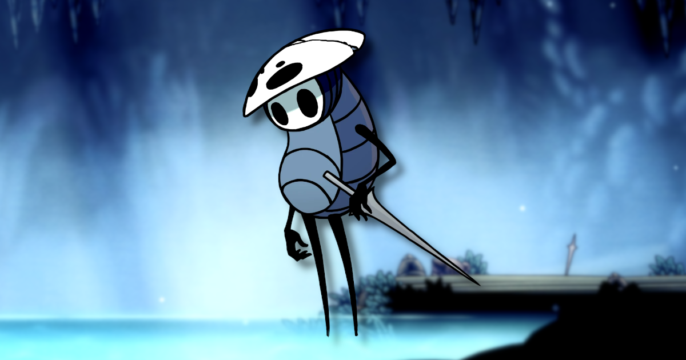
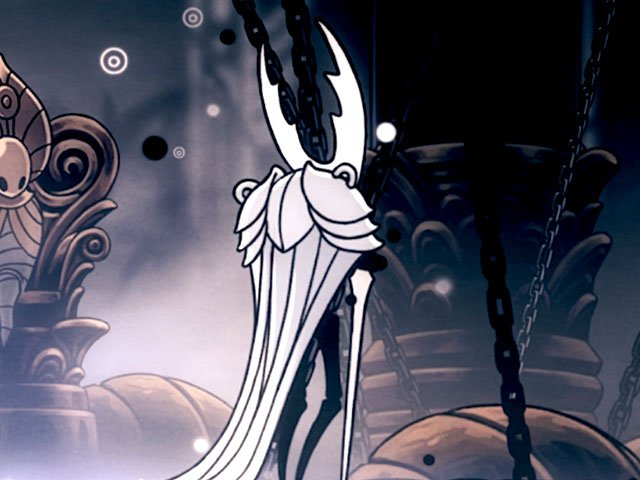

¿Qué es Hollow Knight?
Hollow Knight es un videojuego de acción y aventura en 2D desarrollado por Team Cherry. Ambientado en un vasto mundo subterráneo llamado Hallownest, el jugador controla a un caballero silencioso que explora ruinas antiguas, lucha contra criaturas y descubre los secretos de un reino caído.

COMUNIDAD
Únete a la comunidad y comparte tus experiencias:
- Descubre secretos ocultos
- Comparte estrategias
- Habla sobre tus personajes favoritos

TABLA DE PERSONAJES PRINCIPALES
| Personaje | Rol en la historia | Ubicación principal |
|---|---|---|
| The Knight | Protagonista y explorador | Todo Hallownest |
| Hornet | Aliada y rival | Agujas y Caminos Verdes |
| Quirrel | Compañero explorador | Ciudad de Lágrimas |
| El Hollow Knight | Receptáculo del Sello | Templo del Huevo Negro |
Personajes Destacados
The Knight
Un misterioso viajero silencioso y el protagonista del juego.

Hornet
Guardiana de Hallownest y clave en el destino del caballero.

Quirrel
Un amable explorador que busca conocer los secretos del reino.

El Hollow Knight
El recipiente sellado que contiene la infección del reino.